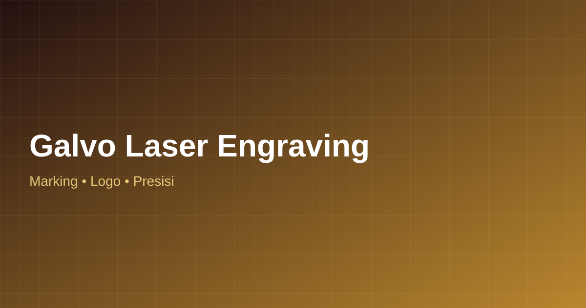

Galvo laser engraving memungkinkan pembuatan tanda, logo, kode produksi, hingga detail dekoratif pada permukaan logam dan material lain dengan kecepatan dan presisi tinggi.
💬 WhatsApp Raja Cutting Laser
Teknologi galvo laser memungkinkan proses engraving dan marking yang sangat presisi dan cepat pada berbagai permukaan, termasuk logam, untuk kebutuhan seperti logo perusahaan, kode produksi, nomor seri, hingga detail dekoratif pada produk.
Raja Cutting Laser menyediakan layanan galvo laser engraving untuk melengkapi hasil cutting laser dan CNC router, sehingga produk Anda dapat memiliki detail tambahan berupa teks, logo, atau motif halus.
Engraving logo perusahaan pada produk atau material logam.
Marking kode produksi atau nomor seri pada komponen.
Galvo laser bekerja cepat dengan hasil detail yang presisi.
Dapat dikombinasikan dengan hasil cutting laser atau CNC router.
Proses pemesanan yang mudah dan transparan dari konsultasi hingga pengiriman.
Hubungi tim Raja Cutting Laser via WhatsApp, ceritakan kebutuhan ornamen, partisi, atau plafon Anda.
Kami bantu siapkan desain motif sesuai konsep masjid, rumah, atau bangunan komersial Anda.
Pengerjaan menggunakan mesin CNC router dan galvo laser untuk hasil ornamen presisi dan detail.
Hasil difinishing rapi, dikemas aman, dan dikirim ke lokasi proyek Anda di area Jabodetabek.
Beberapa pertanyaan yang sering ditanyakan calon pelanggan Raja Cutting Laser terkait galvo laser engraving.
Galvo laser engraving adalah teknik pengukiran atau penandaan permukaan material menggunakan laser dengan sistem cermin galvanometer yang bergerak cepat, menghasilkan marking presisi tinggi.
Galvo laser umumnya digunakan pada material logam, namun juga dapat diaplikasikan pada beberapa material non-logam tergantung jenis dan ketebalannya. Konsultasikan material Anda dengan tim kami.
Bisa. Engraving sering digunakan untuk menambahkan detail logo, teks, atau motif pada produk yang sudah dipotong menggunakan laser cutting atau CNC router.
Jelajahi layanan lain dari Raja Cutting Laser yang mungkin Anda butuhkan.
Sampaikan kebutuhan engraving atau marking produk Anda kepada tim Raja Cutting Laser.
💬 WhatsApp Raja Cutting Laser